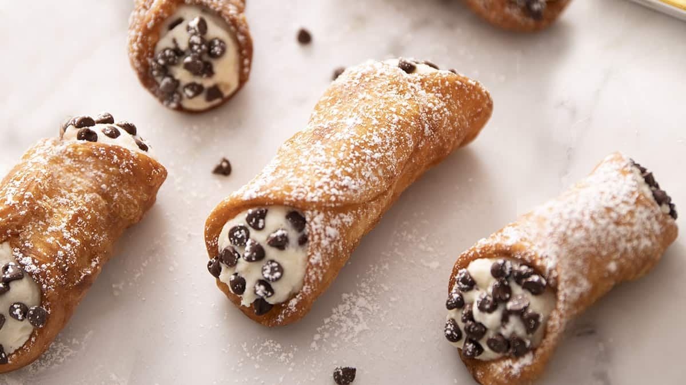

Sicilian Cannoli

A favourite of Queen Elizabeth
Cannoli is an Italian dessert made with a deep-fried pastry shell containing a sweet ricotta filling.
Get creative with the toppings for this recipe!
Ingredients
- Flour
- Salt
- Ricotta
- Sugar
- Eggs
- Chocolate Chips
- Pistachio
Instructions
- Roll the dough out to a thickness of about 1 inch.
- Form the cannoli shape, and drop it in a pot of oil heated to about 354 Celsius.
- Mix a cup of ricotta cheese with 2 tablespoons of sugar and 2 egg yolks.
- Leave the fried pastry shells to rest for 10 minutes.
- Using a piping bag, fill the pastry shells with the ricotta mix.
- Now throw it out and go make yourself some oatmeal.